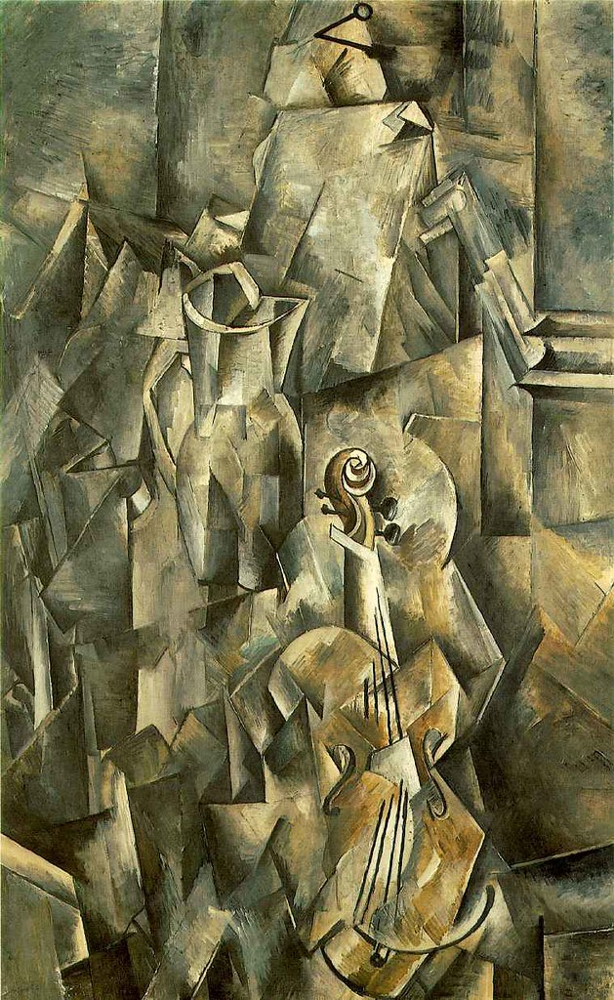
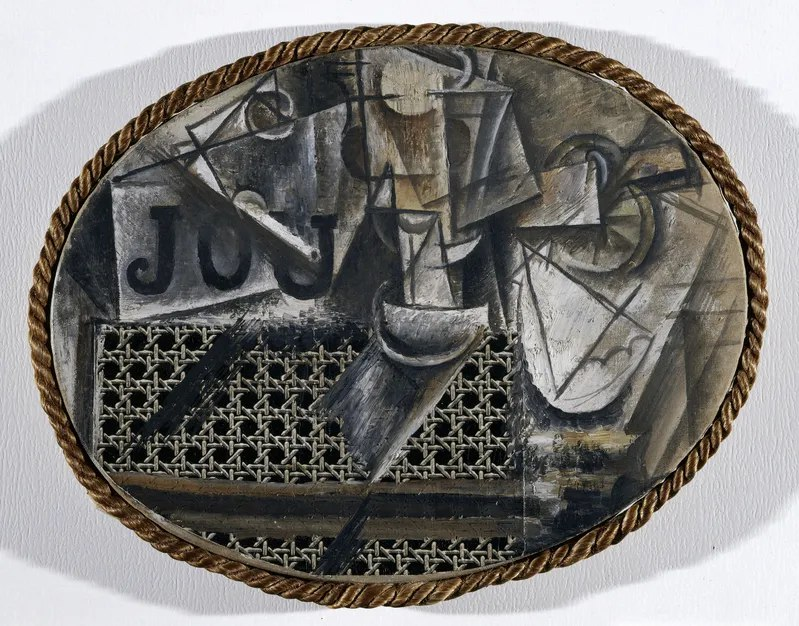
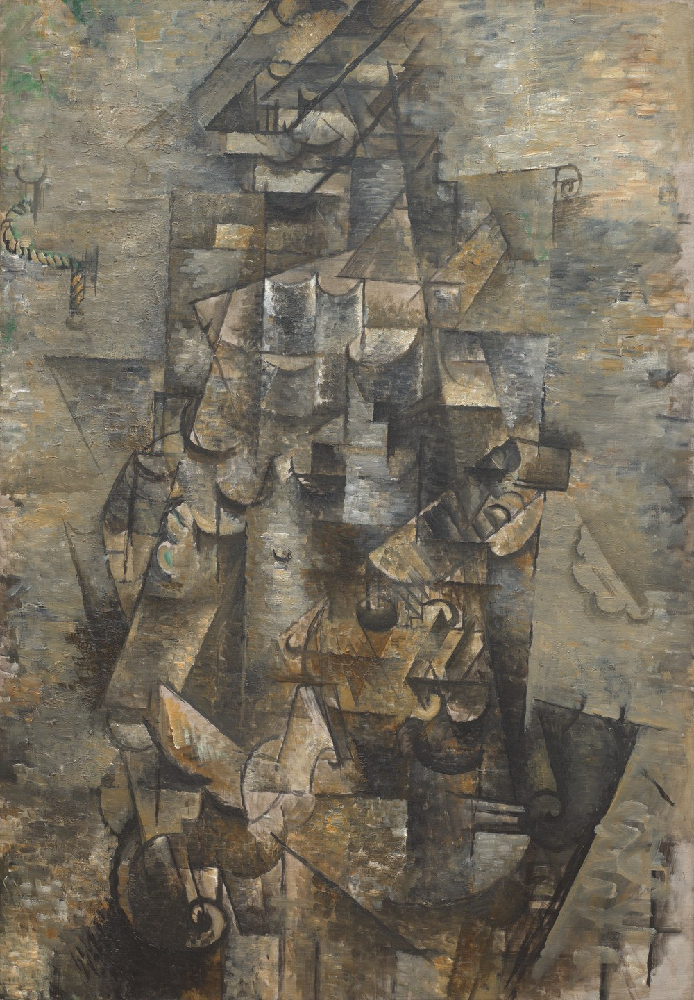
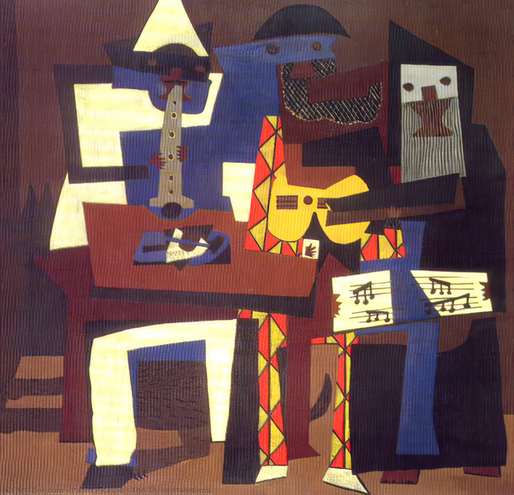
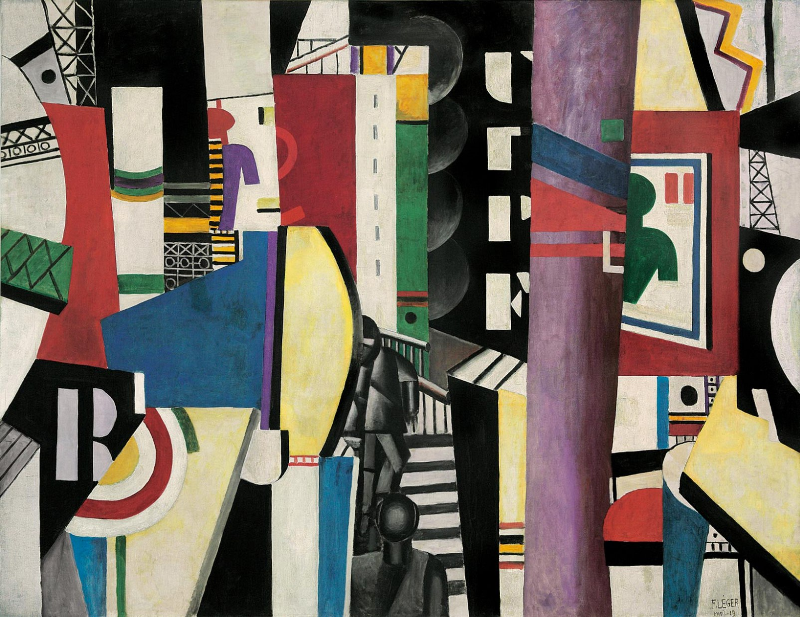
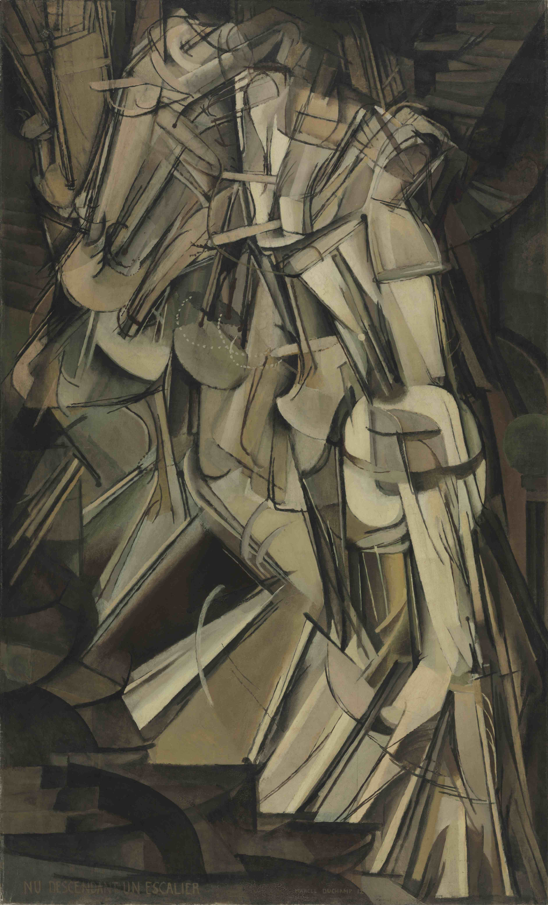

Meesterwerk: Les Demoiselles d'Avignon
Pablo Picasso, 1907

🎨 STIJLFIGUREN & THEMA'S
📐 GEOMETRISCHE FRAGMENTATIE
Alles is vlak: Objecten worden opgebroken in geometrische vormen - kubussen, cilinders, kegels, vlakken. Het ronde wordt hoekig, het organische wordt mechanisch.
Meervoudig perspectief: Je ziet het object van voren én van opzij tegelijk. De neus kan profiel zijn terwijl de ogen frontaal kijken. Tijd en ruimte worden samengeperst.
🎨 ANALYTISCH vs SYNTHETISCH
Analytisch (1909-1912): Monochroom (bruin, grijs), objecten worden geanalyseerd tot hun essentiële vormen. Bijna abstract - soms is het onderwerp nauwelijks herkenbaar.
Synthetisch (1912-1914): Kleur keert terug, vormen worden eenvoudiger, herkenbaarder. Collage wordt belangrijk - echte materialen (kranten, behang) worden geplakt.
📰 COLLAGE & PAPIER COLLÉ
Gemengde media: Picasso plakt echte kranten, behang, touw op het doek. Dit ondermijnt de "zuiverheid" van de schilderkunst - alles mag.
Werkelijkheid + Illusie: Het echte materiaal (bijv. een stuk krant) contrasteert met het geschilderde. Wat is echt, wat is afbeelding?
🌍 PRIMITIVISME & ANDERE CULTUREN
Maskers: Afrikaanse en Oceanische maskers inspireren Picasso. Het primitieve wordt modern - de "wilde" heeft iets te leren de "beschaafde".
Platheid: Net als in Egyptische of Japanse kunst: geen westerse diepte, maar een plat vlak. Het doek is een oppervlak, geen raam.
🎨 TIEN MEESTERWERKEN - GEDETAILLEERDE ANALYSE
1. "Les Demoiselles d'Avignon" (1907) — Pablo Picasso
Museum of Modern Art, New York · 244 × 234 cm · Olieverf op doek
Achtergrond: Vijf prostituees in een bordeel in Barcelona (Carrer d'Avinyó). Picasso's doorbraak naar het modernisme. De titel is later bedacht door een vriend - Picasso noemde het "Het Bordeel van Avignon". Dit is het begin van het Kubisme.
🔍 STIJLANALYSE
Maskers: De twee figuren rechts hebben Afrikaanse maskers. Picasso bezocht het Trocadéro museum in Parijs en was gefascineerd door "primitieve" kunst. Dit is geen exotisme maar een zoektocht naar essentie.
Geometrische lichamen: Borsten zijn kegels, benen zijn cilinders, gezichten zijn diamanten. Het vrouwelijke lichaam wordt opgebroken in hoekige facetten. Schoonheid is niet meer rond maar scherp.
Meervoudig perspectief: De neus kan profiel zijn terwijl de ogen frontaal kijken. Je ziet meerdere kanten tegelijk. Dit is niet "vervorming" maar "meer waarheid" - zo zien we de werkelijkheid in tijd.
Angst: De figuren zijn niet uitnodigend maar bedreigend. De maskers zijn agressief. Dit is geen prettig bordeel maar een angstdroom van seksualiteit.
Begin van Kubisme: Picasso's vrienden (Braque, Derain) waren geschokt. Matisse noemde het "De demoiselles d'Avignon" als spot. Maar het veranderde alles - de weg naar abstractie begint hier.
2. "Stilleven met Viool en Kan" (1910) — Georges Braque
Kunstmuseum Basel | 116 × 81 cm | Olieverf op doek

Achtergrond: Een typisch stilleven van het Analytische Kubisme. Braque en Picasso werkten in deze periode zo nauw samen dat hun werken bijna niet te onderscheiden zijn. Het stilleven - het meest traditionele onderwerp - wordt radicaal vernieuwd. De viool en kan zijn herkenbaar maar opgebroken in geometrische facetten.
🔍 STIJLANALYSE
Analytisch Kubisme: De objecten (viool, kan, tafel) zijn opgebroken in hoekige facetten en vlakken. Je ziet meerdere kanten tegelijk - de "f-gaten" van de viool, de scroll, de ronding van de kan, maar alles is gefragmenteerd in geometrische vormen.
Monochroom palet: Grijzen, bruinen, olijfgroenen en beige - de kleur is eruit geanalyseerd. Alles dient de vormanalyse, niet de kleur. Het is als een tekening in olieverf.
Platheid en diepte: Geen traditioneel perspectief, geen atmosferisch effect. Het doek is een plat vlak. Maar de overlappende facetten suggereren toch driedimensionaliteit - een paradox die het kubisme definieert.
Samenwerking Braque-Picasso: In 1910 werkten ze dagelijks samen in hun studio's. Ze deelden dezelfde visie: "Laten we de werkelijkheid analyseren tot haar essentie." Dit was revolutie door samenwerking.
3. "Portret van Daniel-Henry Kahnweiler" (1910) — Pablo Picasso
Art Institute of Chicago · 100 × 73 cm · Olieverf op doek

Achtergrond: Kahnweiler was Picasso's kunsthandelaar - en zijn meest loyale supporter. Hij kocht alles wat Picasso en Braque maakten. Dit portret toont hem als een man van cultuur én als een verzamelaar van facetten.
🔍 STIJLANALYSE
Portret zonder gezicht: Je ziet Kahnweiler's ogen, neus, mond - maar verdeeld over het doek. Het is een psychologisch portret, niet een fysiek. We zien zijn "essentie" verspreid in ruimte.
Meervoudig perspectief: Het gezicht wordt gezien van voren én van opzij. De tijd is samengeperst - alsof je om de persoon heen loopt terwijl je kijkt.
Monochroom: Grijs, bruin, beige. De kleur zou afleiden van de vormanalyse. Dit is wetenschap: de mens opgebroken in componenten.
Compositie: De figuur is centraal maar gefragmenteerd. De achtergrond en de voorgrond vloeien in elkaar. Er is geen "achter" meer - alleen vlakken.
4. "Stilleven met Rieten Stoelzitting" (1912) — Pablo Picasso
Musée Picasso, Parijs · 29 × 37 cm · Olieverf en oliedoek op doek

Achtergrond: Het eerste echte collage in de kunstgeschiedenis. Picasso plakt een stuk echt rieten stoelzitting (oliecloth/oliedoek) op het ovale doek, omrand met touw, en schildert er omheen. Het begin van het Synthetische Kubisme - een revolutie die de grens tussen "hoge kunst" en "alledaagse materialen" doorbrak.
🔍 STIJLANALYSE
Collage revolutie: Echt materiaal (rieten patroon op oliecloth) naast geschilderd materiaal. De rieten zitting is "echter" dan de geschilderde stukken, maar alles is op een plat vlak. Dit ondermijnt de traditionele schilderkunst zelf - kunst is niet langer alleen namaak, maar constructie.
Letters en vormen: "JOU" (fragment van "JOURNAL") en geometrische vormen (glas, pijp, citroen) zijn geschilderd. Letters zijn zowel betekenis als vorm - typisch kubistische ambiguïteit tussen lezen en kijken.
Synthetisch Kubisme: Kleur keert terug (beige, bruin, grijs), vormen worden eenvoudiger en vlakker. We herkennen weer objecten, maar ze zijn plat, decoratief, bijna abstract. Van analyse naar synthese.
Ovale compositie: Het werk is ovaalvormig met een touw-frame - alsof het een "echt" object is, geen schilderij. Picasso daagt de kijker uit: is dit kunst of voorwerp? Schilderkunst of object?
5. "Man met een Gitaar" (1911-1912) — Georges Braque
Museum of Modern Art, New York · 116 × 81 cm · Olieverf op doek

Achtergrond: Een van de belangrijkste werken uit het Analytische Kubisme. Braque schilderde deze figuur met gitaar tijdens zijn intensieve samenwerking met Picasso in 1911-1912. Het onderwerp is volledig gefragmenteerd in geometrische vlakken - alleen een geoefend oog herkent de gitaar en de man.
🔍 STIJLANALYSE
Analytisch Kubisme op zijn best: De man en zijn gitaar zijn opgebroken in hoekige facetten, rechte lijnen en geometrische vormen. De traditionele perspectief is volledig verlaten - je ziet het object vanuit alle kanten tegelijk, maar het is bijna abstract.
Gedempt palet: Grijzen, bruinen, okers en gedempte groenen. Kleur is ondergeschikt aan vorm. Braque en Picasso spraken af: "Geen decoratie, alleen structuur." De dikke impasto-verf geeft textuur aan de vlakken.
Figuur en achtergrond versmolten: De grens tussen man, gitaar en omgeving is vervaagd. Alles is één samenhangend geheel van overlappende vlakken. Dit is de kern van het kubisme: geen hiërarchie, geen diepte, alleen platte vlakken die ruimte suggereren.
Braque-Picasso samenwerking: In 1911 werkten ze zo nauw samen dat hun werken nauwelijks te onderscheiden zijn. Ze noemden zichzelf "twee bergbeklimmers vastgebonden aan hetzelfde touw." Dit werk is het resultaat van die revolutie.
6. "Drie Muzikanten" (1921) — Pablo Picasso
Museum of Modern Art, New York · 201 × 223 cm · Olieverf op doek

Achtergrond: Geschilderd in Fontainebleau tijdens Picasso's zomer daar. Het toont drie figuren uit de Commedia dell'arte: Harlekijn (midden met gitaar in ruitpak), Pierrot (links met klarinet in het wit), en een monnik/Pulcinella (rechts met muziekblad). Het is Synthetisch Kubisme op monumentaal formaat - groot, kleurrijk, decoratief.
🔍 STIJLANALYSE
Synthetisch Kubisme op zijn best: Kleur keert terug - fel geel, blauw, bruin, wit, rood. De vormen zijn eenvoudiger en herkenbaarder dan in het analytische kubisme. We zien duidelijk drie figuren, maar ze zijn nog steeds geometrisch, plat, samengesteld uit vlakken.
Commedia dell'arte personages: Harlekijn (midden, de gele figuur met de ruitvormige jas en gitaar), Pierrot (links, wit, de melancholieke clown met klarinet), en de monnik/Pulcinella (rechts, donker, met muziekblad). Picasso identificeerde zich met Harlekijn - de kunstenaar als nar, als entertainer.
Compositie: De drie figuren vormen een hechte eenheid, samengeperst in de beeldruimte. Ze zitten dicht bij elkaar, muziek makend samen. Maar elke figuur is ook een apart vlak - een puzzelstuk in het grotere geheel. De vlakke achtergrond contrasteert met de gevelde figuren.
Neo-classicisme invloed: Dit werk staat op de grens van Kubisme en Picasso's latere "klassieke" periode. De figuren zijn monumentaal, bijna sculpturaal, met heldere kleuren en duidelijke contouren. Het is Kubisme dat naar de Renaissance kijkt - een synthese van moderniteit en traditie.
7. "De Stad" (1919) — Fernand Léger
Philadelphia Museum of Art · 231 × 298 cm · Olieverf op doek

Achtergrond: Léger's monumentale ode aan de moderne stad, geschilderd na de Eerste Wereldoorlog. Het toont de dynamiek en energie van het stedelijke leven met zijn industriële architectuur, machines en arbeiders. Het is Kubisme dat de moderne tijdgeest viert - optimistisch, mechanisch, vitaal.
🔍 STIJLANALYSE
Tubisme en mechanische esthetiek: Léger ontwikkelde zijn eigen stijl "tubisme" - alles bestaat uit cylinders, buizen, tubes, machines. Gebouwen, bruggen, fabrieksschoorstenen en elektriciteitsmasten zijn gereduceerd tot basisvormen. De mens wordt onderdeel van de machine.
Stedelijke dynamiek: De compositie is een wirwar van geometrische vlakken - rechthoeken, cirkels, driehoeken - die elkaar overlappen. Trapleuningen, reclameborden, rook, architectuur - de stad is een labyrint zonder begin of eind, een explosie van vormen en beweging.
Primaire kleuren en contrast: Rood, blauw, geel (primaire kleuren) contrasteren met zwart-wit en secundaire kleuren (groen, paars). De kleuren zijn vlak en helder - geen schaduwen, geen realisme. Dit is geen monochroom Kubisme maar een viering van kleur als energie en vitaliteit.
Schaal en optimisme: Het werk is enorm (2x3 meter) - de stad is geen intieme ervaring maar een overweldiging. Léger viert de moderne stad als symbool van vooruitgang, technologie en de industriële revolutie. Het is optimisme over de toekomst.
8. "Portret van Pablo Picasso" (1912) — Juan Gris
Art Institute of Chicago · 93 × 74 cm · Olieverf op doek

Achtergrond: Juan Gris' portret van zijn vriend en mentor Picasso. Gris was de derde man van het Kubisme (na Picasso en Braque). Zijn stijl is strakker, meer geometrisch, bijna wetenschappelijk.
🔍 STIJLANALYSE
Gris' stijl: Strakker, meer geordend dan Picasso. De vlakken zijn duidelijker, de lijnen zijn preciezer. Gris was een tekenaar voor hij schilder werd - dat zie je.
Collage-elementen: Stukken behang, krant, gekleurde papieren. Gris was een meester van het papier collé. Het echte materiaal contrasteert met het geschilderde.
Herkenbaarheid: Dit is duidelijk een portret - je ziet Picasso's profiel, zijn hoge voorhoofd, zijn intense blik. Maar het is opgebroken in facetten.
Kleur: Gris gebruikt meer kleur dan Picasso in deze periode. Blauw, bruin, beige - ingetogen maar aanwezig. Het is eleganter, minder ruw.
9. "Naakt dat een Trap afdaalt, Nr. 2" (1912) — Marcel Duchamp
Philadelphia Museum of Art · 148 × 89 cm · Olieverf op doek

Achtergrond: Duchamp's meest bekende schilderij. Een figuur die een trap afdaalt, opgebroken in sequenties van beweging. Geïnspireerd door chronofotografie (Muybridge). Het veroorzaakte een schandaal op de Armory Show in New York (1913).
🔍 STIJLANALYSE
Beweging in tijd: Net zoals een fototoestel met lange sluitertijd beweging vastlegt als strepen, zo toont Duchamp de figuur op meerdere plekken tegelijk. Het is "dynamische" kunst.
Mechanisch: De figuur lijkt een machine - een cyborg, een robot. Het is bijna niet menselijk. Duchamp was gefascineerd door technologie en de "einde van de mens".
Bruin monochrome: De kleur is ingetogen - bruin, beige, oker. Dit is geen vrolijk schilderij maar een ernstige studie van beweging.
Invloed: Dit werk maakte het Amerikaanse publiek woedend. "Een botsing tussen een houtzagerij en een explosief pakhuis," schreef een criticus. Maar het was ook een succes - het toonde dat Europa modern was.
10. "Vrouw met een Mandoline" (1909) — Pablo Picasso
Tate Modern, Londen · 92 × 73 cm · Olieverf op doek

Achtergrond: Een vroeg Kubistisch werk, nog in de overgangsfase. De vrouw is herkenbaar, de mandoline is herkenbaar - maar beide zijn al opgebroken in facetten. Dit is Picasso op weg naar het volledige Kubisme.
🔍 STIJLANALYSE
Overgangsfase: Dit is nog geen volledig Kubisme. De figuur is herkenbaar, de ruimte heeft nog diepte. Maar de beginselen zijn er: fragmentatie, meervoudig perspectief, geometrisering.
De mandoline: Het instrument is een ronde vorm die wordt opgebroken in hoeken. Het is metafoor: muziek (rond, vloeiend) wordt visueel (hoekig, statisch).
Kleur: Oker, bruin, grijs - maar met vleugjes roze en blauw. Nog niet het extreme monochrome van 1910-1912, maar al onderweg.
Cézanne: Dit werk staat in de traditie van Cézanne, die Picasso als "de vader van ons allen" beschouwde. Cézanne's geometrische natuur wordt hier systematisch toegepast.
📚 TIJDSGEEST CONTEXT (1907-1914)
🌍 POLITIEK PERSPECTIEF
Het Kubisme (1907-1914) ontwikkelde zich in een politieke context die werd gekenmerkt door de relatieve stabiliteit van de pre-oorlogse Belle Époque, maar ook door de onderliggende spanningen die zouden leiden tot de Eerste Wereldoorlog. De politieke structuur van Frankrijk, het centrum van het Kubisme, werd gedomineerd door de Derde Republiek, een parlementaire democratie die echter werd gekenmerkt door politieke fragmentatie, maatschappelijke conflicten en toenemende internationale spanningen met Duitsland. De Eerste Wereldoorlog (1914-1918) betekende het definitieve einde van het analytische Kubisme, daar de meeste kunstenaars werden gemobiliseerd en de artistieke productie nagenoeg stilviel. Na de oorlog ontwikkelde het Kubisme zich verder in een andere vorm - synthetisch Kubisme - maar de radicale avant-garde energie van de pre-oorlogse jaren was verloren.
De sociale dynamiek werd gedomineerd door de kosmopolitische kunstenaarsgemeenschap van Parijs, waar kunstenaars uit heel Europa en Amerika samenkomen. Montmartre werd het centrum van een bohémien cultuur, waar Pablo Picasso (uit Spanje), Georges Braque (uit Frankrijk), Juan Gris (uit Spanje), en vele anderen in relatieve armoede maar met grote artistieke vrijheid leefden en werkten. De kunsthandel, vertegenwoordigd door figuren als Daniel-Henry Kahnweiler, begon avant-garde kunst te kopen en te promoten, waardoor een markt ontstond voor experimenteel werk. Tegelijkertijd werd de traditionele Salonsysteem, dat de toegang tot de officiële kunstwereld controleerde, steeds meer uitgedaagd door onafhankelijke tentoonstellingen en particuliere galerijen.
De intellectuele context werd gekenmerkt door revoluties in de wetenschap en filosofie. Albert Einstein's speciale relativiteitstheorie (1905) fundeerde het idee dat ruimte en tijd niet absoluut zijn, maar relatief aan de waarnemer. Henri Bergson's filosofie van de 'duur' (durée) benadrukte de subjectiviteit van tijdservaring en de onmogelijkheid om de werkelijkheid vast te leggen in een enkel moment. Deze intellectuele revoluties beïnvloedden de artistieke zoektocht naar nieuwe manieren om de werkelijkheid te representeren - niet als statisch beeld, maar als meervoudig perspectief, als simultane zicht op verschillende facetten van hetzelfde object. De invloed van niet-westerse kunst, met name Afrikaanse maskers en Oceanische sculpturen, was cruciaal voor de ontwikkeling van een nieuwe visuele taal die de Europese traditie van realistische representatie fundamenteel uitdaagde.
De verbinding tussen politiek en artistieke stijl was indirect maar fundamenteel. Het Kubisme's revolutie - de ontbinding van het object in geometrische facetten, de simultane presentatie van meerdere perspectieven, de verwerping van traditioneel perspectief en illusionisme - was een revolte tegen de heersende visuele conventies en een zoektocht naar een nieuwe visuele taal die de moderne werkelijkheid kon uitdrukken. De nadruk op structuur, geometrie en intellectuele constructie verbeeldde een wereld die niet meer werd beheerst door subjectieve emotie of romantische expressie, maar door rationele analyse en systematische decompositie. Het Kubisme was daarmee een intellectuele revolte, een poging om de kunst te bevrijden van de conventies van het verleden en een nieuwe basis te leggen voor de 20e-eeuwse moderne kunst. De politieke implicaties waren indirect: het Kubisme was niet expliciet politiek, maar de radicale vernieuwing verbeeldde een geest van revolte, kritiek en vernieuwing die paste bij een tijdperk van wetenschappelijke revolutie, technologische vooruitgang en politieke spanning.
Bronnen: Wikipedia - Cubism, Pablo Picasso, Georges Braque, Juan Gris, Analytic Cubism, Synthetic Cubism, Modernism, Primitivism, Theory of relativity.
📖 LITERAIR PERSPECTIEF
Het kubisme, ontwikkeld door Pablo Picasso en Georges Braque, had een diepgaande invloed op de literatuur, vooral in Frankrijk. De beweging daagde de traditionele perspectiefvisie uit en introduceerde een simultane manier van kijken die ook in de literatuur navolging vond. Schrijvers als Guillaume Apollinaire, Blaise Cendrars en Max Jacob pasten kubistische principes toe in hun werk, waarbij ze lineaire vertellingen braken en beelden opstapelden in collage-achtige constructies. Apollinaire, die nauw verbonden was met de kubistische schilders, ontwikkelde de 'calligramme'—een vorm van concrete poëzie waarbij het typografische beeld de betekenis van het gedicht versterkte. Zijn 'Calligrammes' (1918) zijn visuele gedichten die de grenzen tussen tekst en beeld vervagen. In zijn poëtische manifesten propageerde Apollinaire een nieuwe esthetiek die de moderne realiteit in al haar fragmentatie omarmde. Blaise Cendrars bracht in zijn 'Dix-neuf poèmes élastiques' een ritmische, energieke stijl die de snelheid en veelheid van het moderne leven ving. Zijn lange gedicht 'La Prose du Transsibérien et de la petite Jehanne de France' (1913), geïllustreerd door Sonia Delaunay, was een letterlijk kleurrijk experiment in boekvorm dat de kubistische liefde voor simultaniteit deelde. Het kubisme beïnvloedde ook de romanvorm. Schrijvers begonnen te experimenteren met gefragmenteerde vertellingen, meervoudige perspectieven en de weergave van tijd als niet-lineair. De roman begon zich te ontwikkelen als een collage van stemmen, documenten en indrukken, een benadering die later zijn hoogtepunt zou vinden in het werk van moderne auteurs. In de literaire kritiek introduceerde termen als 'simultanéité' en 'vision multiple' een nieuwe vocabulaire voor het bespreken van teksten die de conventionele eenheid van tijd, plaats en handeling loslieten. Het kubisme daagde schrijvers uit om niet één perspectief te kiezen, maar meerdere tegelijkertijd te presenteren. Deze aanpak leidde tot een verrijking van de literaire vorm en tot een nieuwe visie op de verhouding tussen tekst en werkelijkheid. De erfenis van het kubisme in de literatuur is terug te vinden in de modernistische bewegingen die volgden, waaronder het futurisme, dadaïsme en surrealisme. Al deze bewegingen deelden het kubistische verlangen om de conventionele representatie te doorbreken en een nieuwe, complexere relatie te vestigen tussen kunst en werkelijkheid. Pierre Reverdy, een dichter die nauw verwant was aan de kubisten, ontwikkelde een poëtica van het beeld die direct geïnspireerd was door de kubistische schilderkunst. Zijn gedichten zijn constructies van fragmenten die de lezer uitnodigen om betekenis samen te stellen uit heterogene elementen. De kubistische literatuur anticipeerde op technieken die later gemeengoed zouden worden in de moderne roman: de versplinterde vertelling, de meervoudige tijdlijnen, de weigering om de lezer een comfortabel lineair verhaal te bieden. De literaire invloed op het kubisme was aanzienlijk, vooral door de figuur van Guillaume Apollinaire. Diens 'calligrammes' - visuele gedichten waarin de tekst zelf een vorm aannam - exploreerden dezelfde ideeën over de verhouding tussen vorm en betekenis die het kubisme in de beeldende kunst onderzocht. Ook Gertrude Stein, met haar repetitieve, gefragmenteerde proza, deelde met het kubisme een fascinatie voor de meervoudigheid van perspectief en de destabilisering van lineaire tijd. De modernistische literatuur en het kubisme waren twee kanten van dezelfde medaille: beide streefden naar een nieuwe taal die de moderne ervaring kon vatten.
🧠 PSYCHOLOGISCH PERSPECTIEF
Het kubisme markeert een fundamentele breuk met de traditionele westerse waarnemingspsychologie. Waar eerdere kunststromingen streefden naar een illusionistische weergave van de driedimensionale werkelijkheid op een tweedimensionaal vlak, daagden Picasso en Braque dit paradigma uit door de werkelijkheid te ontleden in geometrische vormen en deze simultaan vanuit meerdere gezichtspunten weer te geven. Psychologisch gezien vertegenwoordigt dit een verschuiving van passieve waarneming naar actieve cognitieve constructie. De toeschouwer wordt niet langer uitgenodigd om naar een venster te kijken dat uitkijkt op de wereld, maar wordt gedwongen om de werkelijkheid mentaal te reconstrueren uit gefragmenteerde elementen. Het mensbeeld in het kubisme is radicaal gedecentreerd. Het individu wordt niet langer afgebeeld als een coherente, geïntegreerde persoonlijkheid, maar als een samenstelling van vlakken, hoeken en perspectieven die de multipleiteit van het moderne zelf weerspiegelt. Dit vooruitlopend op latere psychologische theorieën over de gefragmenteerde aard van het zelfbewustzijn en de geconstrueerde aard van identiteit. De dominante emoties in het kubisme zijn minder direct zichtbaar dan in het expressionisme, maar schuilen in de onderliggende intellectuele spanning en het gevoel van desoriëntatie dat het werk oproept. Er is een koele, analytische distantie die contrasteert met de emotionele hitte van het expressionisme, maar die toch een diepe onrust verhult over de stabiliteit van de werkelijkheid en het zelf. De psychische toestand die het kubisme uitstraalt is er een van rationele bevanging en intellectuele exploratie. De kunstenaar treedt op als wetenschapper of analyticus, die de werkelijkheid ontbindt in zijn componenten om deze vervolgens te herstructureren volgens nieuwe principes. Deze benadering weerspiegelt de bredere culturele fascinatie met wetenschap, technologie en de deconstructie van traditionele zekerheden. De verhouding tussen individu en collectief is in het kubisme complex. Aan de ene kant was het een zeer persoonlijke, experimentele praktijk van twee kunstenaars die in nauwe samenwerking werkten. Aan de andere kant werd het al snel opgepikt door een bredere avant-garde beweging en groeide uit tot een van de meest invloedrijke kunststromingen van de twintigste eeuw. Het kubisme kan worden gezien als een poging om een nieuwe collectieve visuele taal te ontwikkelen die paste bij een wereld die fundamenteel aan het veranderen was, waarbij de fragmentatie en simultaneïteit van de moderne ervaring centraal stonden. De psychologische implicaties van het kubisme waren revolutionair. Voor het eerst in de westerse kunstgeschiedenis werd de suggestie dat er één correcte manier bestond om de werkelijkheid waar te nemen, fundamenteel ter discussie gesteld. Het kubisme weerspiegelde een wereldbeeld waarin waarheid multiperspectivisch was, waarin objecten en mensen niet slechts van één kant konden worden begrepen. Deze cognitieve fragmentatie voorafschaduwde de modernistische crisis van betekenis die de twintigste eeuw zou kenmerken.
💭 FILOSOFISCH PERSPECTIEF
Het Kubisme (1907-1922) ontwikkelde zich in een filosofische context die werd gedomineerd door de revolutie in de wetenschap (relativiteitstheorie, kwantummechanica) en een nieuwe conception van ruimte, tijd en objectiviteit. Epistemologisch gezien stond het Kubisme in de traditie van het rationalisme, maar met een fundamentele breuk met het traditionele perspectief. Pablo Picasso (1881-1973) en Georges Braque (1882-1963) ontwikkelden een 'analytische' benadering die het object 'analyseert', 'opbreekt' en 'herstructureert' in geometrische vormen. De 'multiperspectiviteit' - het weergeven van een object vanuit meerdere gezichtspunten tegelijk - fundeerde een nieuwe epistemologie: kennis is niet een 'enkele' waarheid, maar een 'veelvoud' van perspectieven. Picasso's 'Les Demoiselles d'Avignon' (1907) verbeeldt dit programma: vijf naakte vrouwen, weergegeven in scherpe, hoekige vlakken, met Afrikaanse maskers - geen realistische weergave, maar een 'deconstructie' van het klassieke naakt. Henri Bergson (1859-1941), in zijn 'Matière et mémoire' (1896), beschreef de tijd als 'duur' (durée): een continue stroom van ervaringen die niet kan worden gemeten in discrete momenten. De 'kubistische' tijd - de gelijktijdigheid van verschillende momenten - verwees naar deze Bergsoniaanse tijd-ervaring. Metafysisch gezien was het Kubisme beïnvloed door het 'nieuwe realisme' dat de wetenschappelijke revolutie fundeerde. Albert Einstein's (1879-1955) relativiteitstheorie (1905) toonde aan dat ruimte en tijd niet absoluut, maar relatief zijn. De 'kubistische' ruimte - de 'vierdimensionale' weergave van objecten (zoals in Marcel Duchamp's 'Naakt dalend een trap', 1912) - verwees naar deze nieuwe fysica. De 'geometrisering' van de werkelijkheid - het 'cilinder', 'bol' en 'kegel' van Cézanne - fundeerde een 'constructieve' benadering die de natuur niet 'kopieert', maar 'construeert'. Braque's 'Trees at Estaque' (1908) verbeeldt dit programma: het landschap wordt opgebouwd uit kubistische vlakken, niet weergegeven als een 'window on the world'. Ethisch gezien stond het Kubisme in de context van het 'modernisme' dat de traditie afwees en een nieuwe 'waarheid' zocht. De 'primitieve' kunst (Afrikaanse maskers, Iberische beelden) werd een bron van inspiratie: de 'authenticiteit', de 'directheid' en de 'geestelijke kracht' van de niet-westerse kunst werden verheven boven de 'academische' westerse traditie. De 'collage' techniek (zoals in Picasso's 'Still Life with Chair Caning', 1912) fundeerde een nieuwe 'realiteit': de kunst opende zich naar het alledaagse leven (kranten, behang, stof). De 'synthetische' fase van het Kubisme (1912-1914) versterkte deze tendens: de kunstenaar 'construeert' het beeld, niet meer 'analyseert' hij het. Esthetisch gezien ontwikkelde het Kubisme een 'esthetiek van de vorm': kunst moest niet 'natuurlijk' zijn, maar 'geconstrueerd'. De 'vlakke' vlakken, de 'scherpe' lijnen, de 'monochrome' kleuren (zoals in Juan Gris' 'Portrait of Pablo Picasso', 1912) verwezen naar een wereld die niet door het oog, maar door het intellect wordt geconstrueerd. De 'automatie' - het schilderen zonder voorafgaande schets - werd afgewezen ten gunste van een 'systematische' benadering. De 'purisme' van Le Corbusier (1887-1965) en Amédée Ozenfant (1886-1966) versterkte deze tendens: de 'machine' esthetiek, de 'efficiëntie', de 'functionaliteit' werden verheven tot nieuwe idealen. Het Kubisme was daarmee niet slechts een artistieke stijl, maar een filosofische revolutie die de moderne conception van ruimte, tijd en objectiviteit verbeeldde.
Bronnen: Stanford Encyclopedia of Philosophy - 'Bergson', 'Einstein', 'Wittgenstein', 'Phenomenology', 'Relativity'; Wikipedia - 'Cubism', 'Picasso', 'Braque', 'Gris', 'Duchamp', 'Analytic Cubism', 'Synthetic Cubism', 'Collage', 'Primitivism', 'Relativity', 'Modernism', 'Purism'.
📚 CONCLUSIE: DE WERELD OPGESLOVEN IN VLAKKEN
Het Kubisme leert ons:
- Dat perspectief een keuze is: We hoeven niet één kant te kiezen - we kunnen alle kanten tegelijk zien
- Dat kunst materiaal is: Verf, doek, lijm, krant - alles mag
- Dat "primitief" modern is: Afrikaanse maskers zijn niet achterlijk maar vooruitstrevend
- Dat abstractie begint met analyse: Je moet eerst weten wat iets IS voordat je het kunt vervormen
- Dat de wereld fragmentarisch is: Na WOI (die net begon toen het Kubisme eindigde) leek de wereld inderdaad gebroken
Picasso en Braque braken de wereld - zodat we hem opnieuw konden zien.